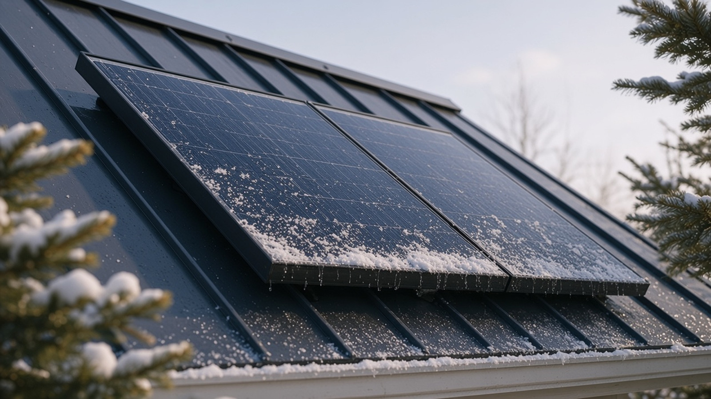
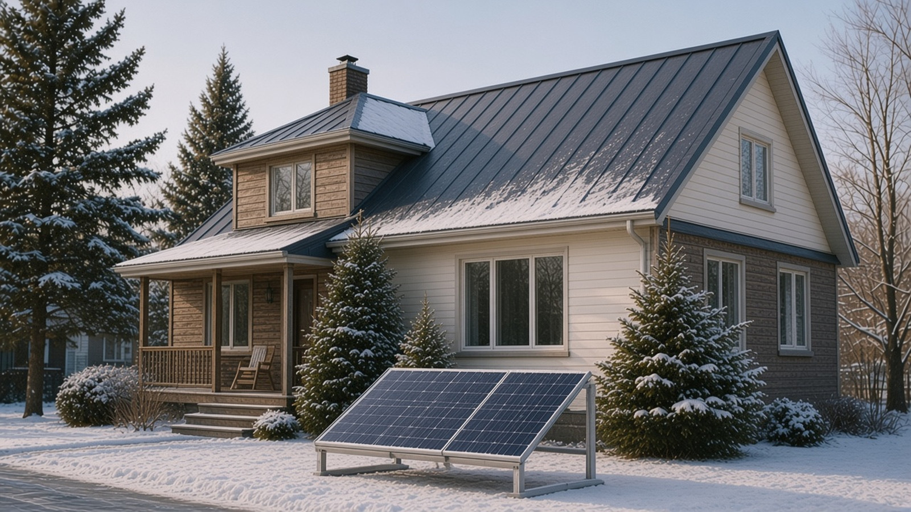
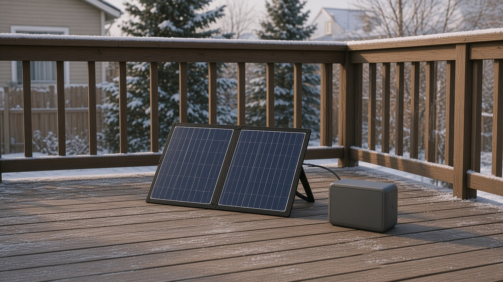

Renogy 28-inch adjustable tilt-mount brackets
Adjustable tilt brackets the listing says fit Renogy 100 W N-type panels on a flat surface, so a stationary array can be set at a chosen angle.
View on AmazonA winter morning on a south-facing roof. Snow has slid off the steeper pitch and still sits on the shallow one. The house is quiet. The grid is on.
The question is not whether the sun reaches Québec. Hydro-Québec notes that southern Québec has significant solar potential, though the sun’s height, cloud cover and snow still shape what an array actually produces [S6]. The real question is which setup fits the site: the shade, the snow, the short December days, and whether the house should stay tied to the grid, stand alone, or keep a battery for the evenings and the outages.
This is a matching guide, not a kit to buy at once, and not a promise about bills. The heart of it is a whole-home array tied to Hydro-Québec. A portable kit and a small cabin system sit around that: useful, and optional.
Some links on this page are Amazon affiliate links. We may earn a commission at no extra cost to you.
As an Amazon Associate I earn from qualifying purchases.
These are the jobs a calm solar setup can do, not a shopping list. Start with the house on the grid; the portable kit and the cabin are smaller tiers, described without prices.
| The situation | A setup that fits | Section |
|---|---|---|
| Daytime household loads, with the grid as backup | A whole-home array under Hydro-Québec’s net metering, battery optional | Tied to the grid |
| Essential loads that should stay on during an outage | The same array, with a hybrid inverter and a battery | If the lights should stay on |
| A shaded or many-sided roof | The same whole-home array, with microinverters or power optimizers | Shade |
| An open, unshaded roof facing close to true south | A whole-home array with a string inverter and monocrystalline modules | Shade, What kind of panel |
| Open ground, or a canopy, with a reflective surface below | A ground mount, considered for bifacial modules | Roof, ground, or portable |
| A seasonal cabin, or an RV, with no utility | A small off-grid array, a battery, and usually a generator | Off-grid |
| A balcony, a campsite, a weekend load | A portable panel that charges only a power station | Portable |
A photovoltaic cell is a semiconductor that absorbs sunlight and turns it into an electrical current. How much electricity it makes depends on the light — its intensity and its wavelength — and on the cell itself [S8]. An inverter then converts that current so it can power a building or, if the system is connected to the grid, exchange energy with the utility [S6][S10].
Did you know that a cold, clear day can be kinder to a panel than a hot one? The U.S. Department of Energy notes that photovoltaic modules operate more efficiently in colder weather, and that temperatures above 77 °F (25 °C) cause voltage to fall [S9]. That is a fact about the cell, not a promise about a winter bill. Hydro-Québec still lists the sun’s height, cloud cover and snow among the things that shape real output [S6]. The two facts sit side by side. Neither one cancels the other.
Where the array sits matters as much as what it is made of.
Natural Resources Canada is plain about this. Shade drastically reduces a module’s power at any moment and, over a year, lowers its energy production. It should be assessed early, avoided where possible, and mitigated by placement and by the choice of inverter. Some of that shade comes from outside the building — trees, neighbouring houses, signs, power lines, and snow — and some from the house itself: dormers, gables, stacks and vents [S10].
On a conventional string inverter, the modules are wired in series. Shaded modules draw down the output of their entire string to some extent, even when the other modules are in the sun. Natural Resources Canada notes that string inverters work best when the modules on the same tracking channel share one orientation and are rarely shaded unevenly [S10].
Module-level electronics change that picture, without erasing the shade. With power optimizers, unshaded modules can keep operating at their own maximum even when others on the same string are shaded. Microinverters do the same at the module, or at a pair of modules, and they convert to alternating current at the array, which can be useful if bringing direct current into the building is undesirable [S10]. A site survey still comes first.

Natural Resources Canada treats snow as a form of external shading, and notes that arrays can produce significant point loading when they are snow-covered. The anchors have to resist uplift without damaging the roof [S10].
Hydro-Québec’s planning guidance is practical: face the array south, use a tilt that lets snow slide off, keep shade to a minimum, and give the array adequate clearance. In most cases, it says, it is not necessary to clear snowfall. A well-designed installation with adequate tilt and a mounting height of about 45 cm (18 in) will, in Hydro-Québec’s words, limit accumulation. Some systems may still need careful snow removal, with the right tools [S5]. The U.S. Department of Energy adds that most snow melts or is blown off, but that heavier snow or ice can warp or break a module, and that shovels or standing on panels can do more harm than good [S9]. That is general care, not a Québec code rule. We do not have a sourced snow-loss percentage for Québec, and we will not invent one; Natural Resources Canada’s monthly map values do not already fold in snowfall [S1][S3].
Generally, Canadian rooftop production is maximized with an azimuth as close to true south as possible and a pitch somewhere between the site’s latitude and latitude minus 15° [S10]. A higher tilt — latitude plus 15°, or even a vertical wall — usually yields less over the year, but a better winter share, when sunlight is at its lowest. Higher latitudes have the shortest winter days [S2].
The maps make the seasonal swing plain. For a south-facing array at latitude tilt, Natural Resources Canada’s municipality figures are about 1,190 kilowatt-hours per kilowatt over the year in Montréal, with 63 in December and 123 in July; in Québec City, about 1,137, 61 and 114 [S3]. These are lifetime averages for grid-connected systems without batteries, and the monthly numbers do not account for temperature or snow [S1][S3]. Hydro-Québec’s rule of thumb for southern Québec is an average of about 1,200 kilowatt-hours a year per installed kilowatt, or about 6,000 for a 5-kilowatt array [S6]. A companion page says “up to” 1,200 [S5]. We keep that wording, and we do not treat either figure as a forecast for a given roof.
A small stationary array, on a cabin pad or an RV parked for the season, can also be set at a chosen angle. The Renogy 28-inch adjustable tilt-mount brackets are one such accessory: the listing says they fit Renogy 100 W N-type panels on a flat surface, so the array can be tilted while it stays put. That is the maker’s stated fit, not a universal claim; the same listing says the brackets should be flattened while a vehicle is moving.
Adjustable tilt brackets the listing says fit Renogy 100 W N-type panels on a flat surface, so a stationary array can be set at a chosen angle.
View on AmazonThe cold-weather gain in the cell [S9] and the low winter sun [S2][S3][S6] pull in opposite directions. An honest guide keeps both in view.
If the system includes a battery, chemistry and temperature matter as much as the panel. For lithium iron phosphate (LiFePO4), charging below freezing is typically limited or forbidden by the maker. Rolls, a Canadian manufacturer, tells owners of its LFP range not to charge at 0 °C or colder; between −10 °C and 0 °C the battery may still be discharged, but not charged [S12]. A Texas Instruments design note lists a typical charge window of 0 °C to 45 °C, and a discharge window of −20 °C to 60 °C [S13]. Exact cut-offs belong to the datasheet. Some packs include a heater that warms the cells before they accept a charge [S14]. That is a siting choice: a conditioned room, a heated pack, or a chemistry the datasheet allows. Hydro-Québec notes that a battery is not mandatory on a grid-tied array, but that it can store energy and add resilience during outages [S5].
The EcoFlow RIVER 2 portable power station is a compact LiFePO4 station for this smaller backup path. The listing describes LFP cells and a BMS that monitors temperature. EcoFlow’s published specifications for this model state charging between 0 °C and 45 °C (32 °F and 113 °F) — the maker’s figures, not a promise we attach to a winter day.

A 256 Wh portable station. The listing describes LFP (LiFePO4) cells and a BMS that monitors temperature. EcoFlow’s published specs for this model state charging between 0 °C and 45 °C (32 °F and 113 °F).
View on AmazonFor most houses in Québec, the core setup is a whole-home array that stays connected to Hydro-Québec. The portable kit and the cabin system are smaller jobs, and they come a little later.
With a grid-tied, net-metered system, the array serves the house first. Surplus is injected into the Hydro-Québec grid in exchange for kilowatt-hour credits on later bills [S4][S10]. Under Net Metering Option I, those credits sit in a surplus bank that is reset to zero every 24 months. A positive balance at the reset is credited at the average cost of electricity supply set out in the Electricity Rates, and cannot be moved to another contract [S4].
Photovoltaic power is an eligible source. Residential and farm customers at Rate D, DM or DP, and small- and medium-power business customers at Rate G or M, may apply if the generating capacity does not exceed the lesser of 1,000 kilowatts and the estimated maximum power demand of the contract (Electricity Rates, art. 2.48) [S18], and if the equipment sits at the same delivery point as the contract [S4]. Customers are responsible for purchasing, installing, maintaining and inspecting the equipment [S4]. That is the published rule, not a forecast of a bill.
Hydro-Québec has, since 31 March 2026, offered a purchase grant for solar panels, currently administered for residential customers through its LogisVert program [S7]. The terms are on Hydro-Québec’s site and can change; read the current page before you plan around them. This guide does not quote an amount, and it does not discuss payback. Hydro-Québec also has a path of self-generation in which exchanges with the grid may occur but surplus is not credited [S7]. We mention it only as a possibility the utility may assign.
A standard grid-tied inverter is not, by itself, a backup system. Natural Resources Canada is specific: backup during an outage requires a bi-modal, or hybrid, inverter, which automatically disconnects from the utility and supplies essential loads, usually from a designated sub-panel, from the array and a battery [S10]. Hydro-Québec allows a customer to use their own generating equipment for backup of their own loads only if stated conditions are met, including, in the cases it lists, a switching device with a mechanical interlock. It does not allow islanded generation on anyone else’s loads [S11]. A battery can store photovoltaic energy for later use on most grid-connected setups, and the design can be made battery-ready so a battery can be added later [S10].
An off-grid system has no utility connection. It requires an on-site battery, normally a backup generator for shortfalls, and an inverter-charger that can run loads from the array and the battery and charge the battery from the generator when the sun is not enough [S10]. Size a cabin or RV system for December sun, not for July [S3], and for the battery’s published charge-temperature limit [S12][S13]. This is the smaller, seasonal tier, not the default for a house already on Hydro-Québec service.

A cabin or RV array can start with a single rigid panel and a charge controller, not a whole-home kit. The Renogy 100W N-Type monocrystalline panel is a 100 W module for a 12 V bank, with pre-drilled mounting holes; it is one panel, not a complete kit. The Renogy Rover 20A MPPT charge controller is the controller we pair with it here. The listing says lead-acid types are auto-detected and lithium is a manual setting — worth noting beside the cold-charging caution above. We do not claim built-in Bluetooth for the Rover; the listing’s title and photo are not enough, on their own, to say what is in the box.

A rigid 100 W monocrystalline (N-type) panel for a 12 V cabin or RV array, with pre-drilled mounting holes. It is a single panel, not a complete kit.
View on Amazon
A 20 A MPPT controller for 12 V or 24 V banks. The listing says lead-acid types are auto-detected and lithium is a manual setting.
View on AmazonHydro-Québec’s view is that a building’s roof is generally the preferred location, but that the condition of the roof and its structural capacity should be assessed first. Where the site allows, panels may also go on ground-mounted structures. Municipal regulations vary by town and by method, and they should be checked before work begins [S5]. Ground-mounted arrays can face due south and be set at a tilt chosen for the site; seasonally adjustable racking exists, and local rules should be checked first [S10]. A ground mount also gives bifacial modules a clearer reach at light reflected from the surface below [S5][S6][S10]. South-facing walls and railings can work if they are unshaded; wall arrays are often placed high to reduce damage and winter shade, and a tilted wall array can act as an awning [S10].
A portable or folding panel is a different job: a balcony, a campsite, a weekend load, a power station that is not wired into the house. Official Canadian guidance on this class is thin. We will not invent a winter output figure; any temperature range below is the maker’s, as printed on the listing.

Safety note, said plainly: a portable panel in this guide feeds only a power station. It must not back-feed a household outlet. A kit that plugs into a household receptacle to offset loads is a grid interconnection in all but name, and it follows the same path as any other grid-tied system: a maître électricien, and Hydro-Québec’s authorization, before it is connected [S7][S11]. That is true at any size. Hydro-Québec is categorical: never connect self-generation equipment yourself. A non-compliant installation, it says, is a serious risk of fire, serious injury or death [S7].
The Jackery SolarSaga 200W portable panel is a folding 200 W panel meant to charge a portable station, not a household outlet. The listing states an operating range of −4 °F to 149 °F (−20 °C to 65 °C); those are the maker’s figures, as printed on the listing, not a forecast for a Québec winter day.
A portable power station itself is also covered in When the Grid Goes Dark, which walks through sizing one to keep a lamp and a fridge on through an outage.

A folding 200 W panel meant to charge a portable station, not a household outlet. The listing states an operating range of −4 °F to 149 °F (−20 °C to 65 °C).
View on AmazonNot every panel is doing the same job.
Monocrystalline silicon uses cells cut from a single silicon crystal. Hydro-Québec describes a uniform appearance, often black [S6]. Natural Resources Canada notes that monocrystalline modules are somewhat more efficient than polycrystalline ones, and that they perform better in low light; all-black modules trade a slight high-temperature reduction for a quieter street view [S10]. This is the usual fit where space is limited, and the module we have in mind for a whole-home array.
Polycrystalline silicon uses cells cut from a multi-crystal ingot. Hydro-Québec describes a slightly grainy, bluish surface [S6]. Natural Resources Canada notes that these modules are generally less expensive, with somewhat lower efficiency [S10] — a qualitative remark, not a price. A fit, when it is a fit, is a roof with generous area where appearance is secondary.
Thin-film, including some flexible panels, is made by depositing thin layers onto glass, plastic or metal. Hydro-Québec notes that these modules may be flexible and often look dark or semi-transparent [S6]. The U.S. Department of Energy names cadmium telluride and copper indium gallium diselenide as the main commercial types; their efficiencies still are not quite as high as silicon, and both need more protection for a long life outdoors [S8]. The usual fit is an irregular or weight-limited surface, or a portable mat, not the main array on a house.
The BougeRV Yuma 100W CIGS flexible panel is one such panel: a flexible 100 W CIGS sheet with pre-punched holes, for an irregular or weight-limited surface, as the listing describes.

A flexible 100 W CIGS thin-film panel with pre-punched holes, for an irregular or weight-limited surface, as the listing describes.
View on AmazonBifacial modules capture light on the front and the back, including reflected light [S6]. Hydro-Québec says they may perform better when the surface beneath them reflects light well [S5]. Natural Resources Canada notes that they are often used on shelters, pergolas and railings [S10]. The usual fit is a ground mount, a canopy or a railing — not a tight, flush roof with no light at the back.
On crystalline silicon generally, the U.S. Department of Energy says modules are expected to last 25 years or more, and still to produce more than 80 percent of their original power after that time [S8]. That is the Department’s statement about the technology, not a warranty we attach to a product.
The whole-home connection is not a do-it-yourself job. How we would sort that decision, and what Hydro-Québec publishes about the connection itself, are the next two sections.
Our rule of thumb, not a legal threshold: a portable panel that only charges a power station, and is never wired into the house or plugged into a household outlet, is a job we would treat as do-it-yourself. Once those portable panels add up to more than 400 watts, we would still consult a professional installer. That 400-watt figure is our own guidance, not a law or a Hydro-Québec limit. Anything permanently mounted on a roof or a structure means a professional. So does anything connected to the house wiring, at any size: the 400-watt line is no exception for that.
For any connection to the Hydro-Québec grid, a maître électricien who is a member of the Corporation des maîtres électriciens du Québec (CMEQ) makes the connection, and the work waits on Hydro-Québec’s authorization [S7][S11]. Roof mounting may require an RBQ-licensed contractor; confirm the required licence subclass with the RBQ or a licensed professional before hiring.
A licensed professional confirms what a given site actually requires. The lines above are how we would sort the decision, not a legal rule.
These paragraphs describe what Hydro-Québec and the Régie du bâtiment du Québec publish for a grid-connected system. They are not legal advice. A licensed professional confirms what a given site needs.
Hydro-Québec’s instruction is not to connect self-generation equipment yourself. A non-compliant installation, it says, is a serious risk of fire, serious injury or death [S7]. The electrical connection must be made by an electrical contractor the customer hires, who must be a member of the CMEQ [S7]. Standard E.12-07 is explicit: only a master electrician may install and connect the inverter to the distribution panel, and the owner must have Hydro-Québec’s written authorization before the equipment is connected. Until that authorization is issued, the electrician must lock the system open at the isolation point [S11].
Hydro-Québec’s recommended sequence is: mandate the electrician; the electrician files the installation request; Hydro-Québec evaluates the project, including the hosting capacity of the grid; conditional acceptance is issued; the work and the verification tests are done; final authorization follows a satisfactory signed verification report. It recommends waiting for conditional acceptance before buying the equipment, and it is mandatory to have final authorization before connecting to the grid [S7][S5].
Generating equipment must comply with current Québec regulations and with Hydro-Québec’s conditions, in particular standards E.12-01 and E.12-07. For the facilities E.12-07 covers — certified inverters on the low-voltage system, totalling 40 kW or less at 120/240 V (a typical house) or 100 kW or less at 347/600 V, and with no transformer between the inverter and the customer’s connection point — a certified inverter is one that complies with UL 1741-SB and IEEE 2030.5 [S4][S11]. The same standard also points to the Québec Construction Code, Chapter V – Electricity (CSA C22.10), for disconnect rules [S11].
Hydro-Québec’s planning advice is to choose contractors who hold a valid RBQ licence, to hire a master electrician for the electrical connection, and to look for relevant solar experience; it gives NABCEP as an example of a recognized certification [S5]. The RBQ tells citizens to verify a contractor’s licence in the official register before hiring [S15].
Evening, and the same roof is just a roof again. The snow has shed from the steeper pitch, a lamp is on downstairs, and the grid is still there. A hidden home does not have to go it alone. It just wants a setup that fits the site — the shade, the snow, the short winter day — and a connection made properly, so the house can take a quiet share of the sun and leave the rest to the morning.